Hi 👋 I'm Chief-Daniel Osei, a passionate software engineering student at Newcastle University with a deep fascination for all things tech.
My journey into the world of engineering began during my early school years, where I was constantly interested in how the devices and software around me worked. This curiosity naturally drew me to computer science, a subject I pursued throughout my education. Since then, the subject has developed into a lifelong passion and I am now studying software engineering and working towards becoming a professional in the field.
I discovered my love for programming when I started learning Python at school, which inspired me to work on personal projects at home. During my International Baccalaureate (IB), I expanded my knowledge with Java, which quickly became my favourite high-level language. During this time, I also dabbled in web development and learnt Lua while working on a video game project with friends. Since then, my studies have further developed my skills and given me the opportunity to learn new languages such as Bash, Go and C.
Currently, I am focusing on diversifying my portfolio and gaining professional experience in the industry. One of my recent goals was to master React, a popular web development framework, although I have always had a preference for backend development. Stepping outside of my comfort zone has helped me understand web technologies and I am now able to work seamlessly in both frontend and backend environments.
I am always keen to connect with like-minded people, whether they are developers, employers or just people interested in technology. If you would like to exchange ideas or collaborate with me, please don't hesitate to contact me!
Thank you for reading!
The expense tracker project was my second project working on react after the counter project. Both being my own projects I decided to dive deeper into the complexity of react. I explored the passing of data across and between components using props and contexts to connect my application.
Challenges as mentioned before included correctly and efficiently passing data around to access where needed
Overall this project was actually quite challenging as it was programming in a way I never had to before which also included the planning stage before the developing, making sure I knew the structure before commencing
In the future I could definitely add the ability to delete and edit records similar to how I did this in my to-do list project. As well as improve on my CSS as this is lacking on the project.
Link to repositoryImage of the filter component
Image of records
Image of filter working
This project simulated a real-world professional environment by working in a group of four with unfamiliar team members. My responsibility was to design and implement most of the classes and their methods, laying the foundation for the project. Effective communication was crucial to ensure compatibility between features, and we scheduled multiple meetings to discuss various aspects of the code, ensuring that all components aligned towards our goal. Despite multiple teamates not doing their part, we were able to bring the project to about 80% completion before the deadline due to me and another colleague doing more than we had planned to.
One of the biggest challenges was working in a team of five, which included managing version control and task delegation. Communication was sometimes weak, particularly when certain team members didn’t complete their assigned tasks on time, leading to inefficiencies. Additionally, learning to properly use Git in a team setting was difficult for some members, resulting in mistakes with versioning.
Although the project was not fully completed, we achieved around 85% of the functionality, including the quiz system, basic database integration, and testing. The biggest issue was the lack of communication and organization within the team, which led to duplicated efforts and some features not functioning correctly. However, I gained valuable experience working in a team and learned the importance of clear communication and proper planning in software development.
In the future, I would prioritize more structured planning, such as creating a roadmap to outline dependencies and improve workflow. Increased communication through regular team meetings and ensuring that everyone understands how to properly use Git would help avoid version control issues. Additionally, creating UML diagrams and flowcharts to visualize class interactions would have made the development process smoother.
Example of Javadoc used
*Not able to link repository as it under the universities private organisation
The project involved developing a command-line application using Java, aimed at creating a reporting system for an investor specializing in the film industry. The system is designed to store information about various film studios and their produced films, ensuring effective data handling and reporting.
During the project, effective version control was crucial, involving the creation of a .gitignore file to exclude unnecessary files and ensure relevant commit messages. The necessity to maintain a clean codebase while implementing features tested my knowledge of Java and version control practices.
The project was completed successfully with all the planned features implemented. The core functionalities, such as entering film studio data and generating reports, were achieved. The project was entirely bug-free even with my debugging efforts being minimal, which was a pleasant surprise. I took pride in implementing recursion in the input methods, which enhanced the functionality of the application.
For future iterations, integrating a GUI would greatly improve user experience by providing a more visual and interactive interface. Additionally, incorporating file handling capabilities would allow users to save and retrieve their data, enhancing usability. Exploring the possibility of integrating the application with an online database like IMDb to automatically update film information could provide users with real-time data and significantly reduce manual input.
*Not able to link repository as it is under the universities private organisation
Film addition example
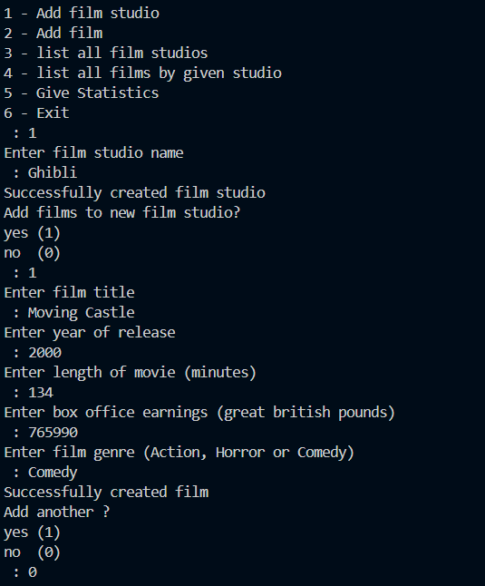Film list example
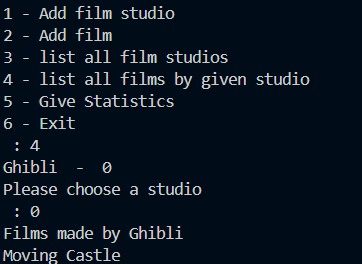Film statistics example
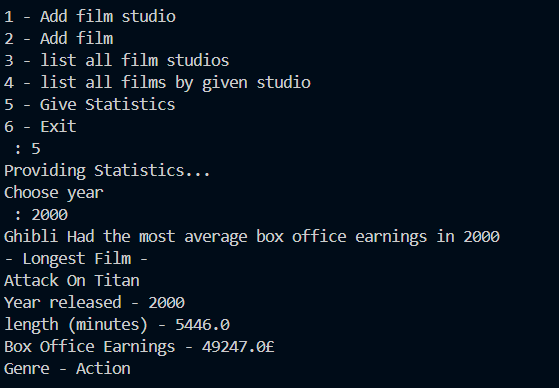 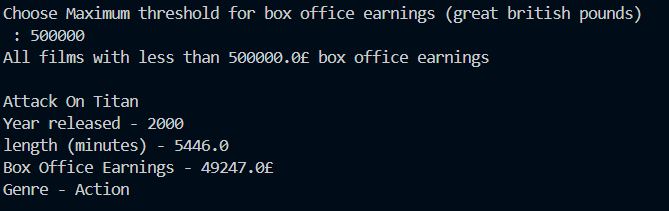This project was part of a mathematics research essay, where I utilized my programming skills to collect and analyze data. I developed Conway’s Game of Life in Java, implementing both manual and random input methods to generate various game configurations. This project allowed me to explore the intersection of mathematics and computer science while applying programming concepts to a theoretical problem.
Please note that this project was completed in 2022! I have progressed a lot since then
The most significant challenge I faced was abstracting the rules and mechanics of the game into a functional code structure, which resulted in approximately 350 lines of code. Implementing the complex rules required extensive use of nested for loops and conditional statements to check the various conditions for cell survival, death, and reproduction.
The project was ultimately successful, demonstrating the practical application of programming in mathematical research. I overcame various problem-solving hurdles, gaining a deeper understanding of the game’s mechanics and the intricacies of coding its logic. The ability to manipulate configurations and observe their outcomes provided valuable insights for my research.
In the future, I would like to enhance the project by visualizing the game on a graphical user interface, displaying the cells on a screen. This would not only improve user interaction but also make it easier to observe the dynamic changes of the game. Although I didn't have the necessary methods to implement this at the time, I believe it would significantly enrich the overall experience of Conway’s Game of Life.
Link to replPicture of array used for grid
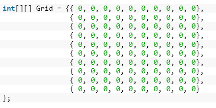Picture of some of the data gathered
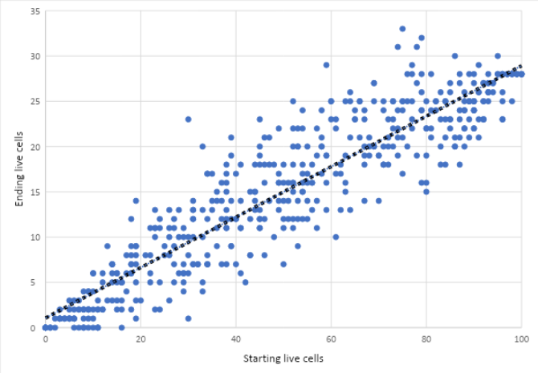Please note that this project begun in 2021!
This project presented several unique challenges. As it was my first time programming in Lua, I had to learn a new programming language while working on the game engine. Additionally# , I faced the challenge of integrating the work done by my teammates who were focused on world-building, which required me to understand their designs and translate them into the game mechanics.
Another challenge was ensuring that communication remained clear and efficient throughout the project. Despite being the sole programmer, I needed to collaborate closely with my teammates to ensure that the game aligned with their creative vision. This experience improved my ability to effectively communicate programming requirements, track missing game elements, and suggest revisions for the project.
Although we aimed higher than our capabilities at the time and didn't finish the project, we did manage to complete a significant portion of it. I succeeded in getting most of the core mechanics of the game functioning, which was a rewarding achievement given the scope of the project and our limited time. The project was still a valuable learning experience that helped me develop both my technical and teamwork skills, particularly when it came to managing expectations and communicating within a group.
Picture of some script used to damage players on touching red lasers
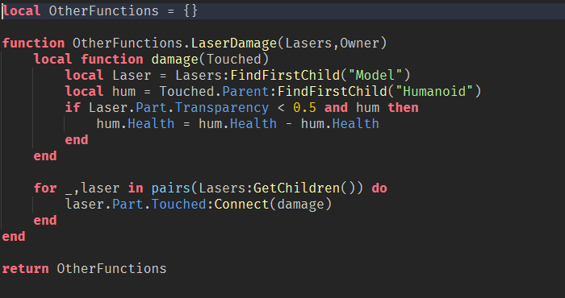One of the main challenges in this project was working with CSS. As I incremented the numbers, I faced difficulties ensuring the layout scaled properly as the numbers grew. This was particularly noticeable as the design became cluttered with larger values, something I aimed to resolve in future projects.
Despite these issues, my focus was primarily on learning the fundamentals of React, so design flaws were not a priority for this project. I found the React documentation easy to follow and was able to successfully implement components and state management for the basic functionality.
This project served as my first step into React development. While it didn’t test my skills as deeply as later projects like the Expense Tracker, it gave me a solid foundation. I became more familiar with how components interact and how state can be managed effectively. Even though the project was simple, the experience it provided was a valuable stepping stone for more complex work.
In the future, I could improve the user interface by resolving scaling issues and applying a more polished design. Adding more interactive features, such as animations or visual feedback when buttons are clicked, could also enhance user experience. However, as this was primarily a learning project, the priority was gaining an understanding of React's core concepts rather than perfecting the UI.
Link to replPicture of array used for grid
Picture of some of the data gathered
As this was my first proper venture into web development, the biggest challenge was stepping out of my comfort zone. Although I’ve never been particularly fond of web development, I found this project to be a great way to ease into it. The technical aspects, such as the core functionality of adding and deleting tasks, were relatively straightforward. However, I did spend some time experimenting with CSS to improve the UI, like implementing hover effects that made tasks more visually interactive.
This project turned out well, especially considering it was a step into an area I was less familiar with. Despite my initial reluctance toward web development, I was able to produce a fully functional and visually responsive to-do list application. The experience broadened my understanding of how to create interactive web pages and helped me build confidence in front-end development.
In the future, adding a database to save tasks and user data would make the app more robust. This could be paired with a login system to allow users to save and access their to-do lists from anywhere. Expanding the application in this way would take it from a basic local tool to something that could be used more practically on a larger scale.
Link to repositoryExample
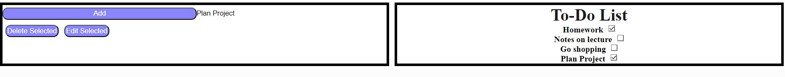Select example
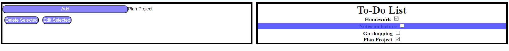Delete example
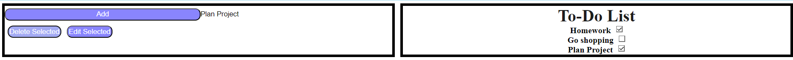Edit example
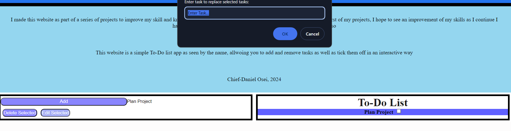